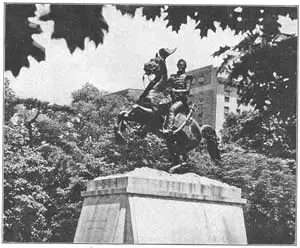

55
OUR OWN SCULPTURE
美国的雕刻

I’VE told you about sculpture from Egypt and Assyria, Greece and Rome, Italy and France, but not a thing about our very own sculpture made in the United States. I did tell you that Houdon made his bust of Washington at Mount Vernon, but Houdon himself was not an American, so he doesn’t count for the United States.
The reason I haven’t told you about American sculpture is that American sculpture was late in starting. Probably the last thing the early settlers would have thought of bringing across the ocean to America would have been a statue. Statues aren’t easy to carry around and the ships were small and crowded. Then when the settlers got here, they were too busy even to try to make statues. They had to chop down trees, build homes, plant crops, fight Indians, explore the country. Two hundred years after the first white settlement of America, they could boast of no real sculptors and, of course, they had no sculpture of their own.
At that time ships were built along the seacoast to bring back goods from other countries, and to hunt whales. These were splendid square-rigged sailing vessels. The owners were proud of their ships and decorated the ships’ bows—the front part—with wooden figures called figure-heads. These figure-heads were generally the figures of mermaids or sea nymphs and seemed to be sprouting out of the bows of the ships. Some figure-heads were full-length figures, some were carved as far as the waist, and some were simply busts. Figure-heads were almost always brightly painted.
The best of the figure-head carvers was named William Rush. He was our first real sculptor. When he was a young man he was a soldier in the Revolution and afterward was an important citizen of Philadelphia. William Rush made many figure-heads, but he also carved a life-size statue of Washington in wood. His best carving in wood is the Spirit of the Schuylkill (School’kill) River. Rush’s friends said that no greater piece of art was to be found in all the world than this statue of the Schuylkill’s Spirit. We don’t think it is as great as that now, but for a country that hadn’t had any sculptors, it was good. Later the Schuylkill statue was cast in bronze and it still stands in Fairmount Park in Philadelphia.
The next important American sculptor was Horatio Greenough. His most famous statue was of George Washington. Greenough worked on it seven years in Italy. It is now in Washington and if you ever see it you’ll never forget it. Washington, in this statue, isn’t in his own clothes. He is dressed only in a kind of sheet, just as if he were a Greek god. Zeus was the head of the Greek gods, Washington was the head of the United States, and so Greenough carved this statue with the body of Zeus and the head of Washington. It looks very queer to us now. It was made in marble and is larger than life-size.
Born the same year as Horatio Greenough was Hiram Powers. Hiram Powers carved a statue in marble that for many years was the most famous statue by an American. It was a marble statue called “The Greek Slave.” It is a young woman with her hands bound together by a heavy chain. Powers carved the Greek Slave in Italy because good marble hadn’t been discovered in America.
Then came a sculptor named Thomas Crawford. He was given the job of making figures for the pediment or triangular space, made by the sloping roof, at one end of the new Capitol that was being built in Washington. Crawford called the figures which he made for this pediment, the Past and Present of the Republic. Sometime, I’m sure, you will make a trip to Washington. When you do, be sure to look at Crawford’s statues. They are on the Senate end of the Capitol.
While you are in Washington, you can’t help seeing the statue on the very top of the dome of the Capitol. It looks like an Indian from the ground and many people think it is supposed to be an Indian. Really it is a statue of Liberty. It also was done by Thomas Crawford.
The Capitol at Washington has had many sculptors working for it. Another of these sculptors was Randolph Rogers. You remember the Gates of Paradise by Ghiberti. Randolph Rogers made two bronze doors for the Capitol that remind us of Ghiberti’s doors for the Baptistery. There are eight small pictures in relief showing the life of Columbus. One of the reliefs shows Columbus with his hand out in front of him. The hand is just the right height to reach easily, so visitors to the Capitol always take hold of it. Then when they go home they can say, “I shook hands with Columbus.” So many people have shaken hands with Columbus that the hand has become worn and shiny. Some day the hand will be worn away altogether so you’d better hurry to shake it!
The Rogers doors were cast in bronze in Europe. The European bronze casters would not tell American sculptors how to cast in bronze, and so Americans had to find out for themselves. A sculptor named Clark Mills was asked by Congress to make a statue of General Andrew Jackson. General Jackson had been a famous fighter and twice President of the United States. He had recently died.
Making this statue was going to be a tough job for Clark Mills. The statue was to be in bronze, and no bronze statue had ever been cast in the United States. What’s more, no equestrian statue had ever been made in the United States. What’s more, the sculptor Mills had never seen an equestrian statue. What’s more, Mills had never seen General Jackson. But, in spite of all these things against him, Clark Mills went to work. He got bronze by melting up bronze cannon that General Jackson had captured.
Finally the statue was completed and set up in Washington. It showed General Jackson taking off his hat as if he were acknowledging the cheers of a crowd. The horse is rearing back on its hind legs. You remember the Gattamelata statue has a ball under the horse’s front foot. The Jackson statue has both front feet of the horse off the ground, but it is well balanced just on the two back feet. Congress liked the statue so much they gave the sculptor twenty thousand dollars extra, and the city of New Orleans had one just like it set up there.
The Mills statue of Jackson isn’t considered as fine a piece of sculpture now as it was when it was new—just like Powers’s Greek Slave and Rush’s wooden Spirit of the Schuylkill. People make fun of it and it does look funny to us, but don’t forget how hard it was to make our first equestrian statue. Here is its picture.

No.55-1 ANDREW JACKSON（《安德鲁·杰克逊》） MILLS（米尔斯 制）
There was an early American sculptor whose work is still thought to be among the best. He was named for a President—John Quincy Adams Ward. Ward made an Indian Hunter that stands in Central Park, New York. The Indian has a bow and arrow in one hand and is holding back his dog with the other.
Ward’s best statue is of George Washington. The statue stands on the steps at the entrance of the Sub-Treasury building in New York City. It looks something like Houdon’s Washington at Richmond, but I think you will really like it better than Houdon’s.
【中文阅读】
我已经介绍过埃及、亚述、希腊、罗马、意大利、法国的雕刻了，但好像还未提到美国的雕刻。之前我介绍过乌敦在芒特弗农为华盛顿制作半身像，但乌敦不是美国人，所以他的作品不属于美国。
我之所以还没有介绍过美国雕刻，是因为美国在这方面起步很晚。可能早期移民者从未想过要把雕像带到大西洋彼岸，因为雕像一方面不易携带，而另外一方面船只又太小太挤。当这些早期移民到达美国后，又忙于伐木建房，种植庄稼，同印第安人争战，探索这个国家等，所以根本无暇尝试制作雕像。在首批白人移民定居美国两百年后，他们还没有引以为豪的雕刻家，当然也没有属于他们自己的雕刻作品。
那时，人们在海岸边建造船只，专门用来从别国运货回国以及捕鲸之用。这些船只都是非常气派的栀帆船，船主们都以此为豪。他们用木雕装饰船头部分，这些木雕称作“船头饰像”。这些船头饰像大多刻画的是美人鱼或海妖，她们就好像从船首涌现出来的一样。有些饰像是全身的，有些是齐腰像，还有的只是半身像，但是这些雕 饰的色泽一般都非常鲜亮。
当时制作船头饰像最好的雕刻家名叫威廉·拉什。他是美国第一位真正意义上的雕刻家。他年轻时曾参加过独立战争，后来成为费城一位举足轻重的人物。威廉·拉什制作了许多船头饰像，但他也为华盛顿刻了一座像真人一样大小的木雕。当然，他最棒的木雕要数《斯古吉尔河之灵》。拉什的一个朋友曾说过世界上没有比《斯古吉尔河之灵》这座雕像更伟大的艺术作品了。虽然，这座雕像并没有现在的雕像那么棒，但是对于在此之前没有一位雕刻家的美国而言，这座木雕就算得是上乘之作了。后来，人们又给这座雕像浇铸了青铜。如今，它仍然屹立在费城的费尔蒙特公园。
位居第二的美国雕刻家是霍雷肖·格雷诺。他最为著名的雕像作品是《乔治·华盛顿》。格雷诺在意大利用七年时间完成了这座雕像，如今这座华盛顿雕像保存在华盛顿。如果谁有幸一睹其风采，相信一定难以忘怀。雕像华盛顿没穿自己的衣服，只披了一种像床单一样的东西，就像希腊的某位神那样。宙斯是希腊的众神之王，华盛顿是美国的总统，于是格雷诺给这座雕像刻了宙斯的身体和华盛顿的脑袋。如今，这座雕像看起来不伦不类，它是由大理石制成的，而且比真人还要大些。
海勒姆·鲍尔斯与霍雷肖·格雷诺生于同年。他刻的一座大理石雕像多年来一直堪称美国最著名的雕像。这座大理石雕像叫做《希腊奴隶》，刻画的是一个年轻的妇人被一副沉重的铁链捆绑着双手。鲍尔斯是在意大利完成这座雕像的，因为那时候美国还没有发现质量很好的大理石。
后来又出现了一位名叫托马斯·克雷福德的雕刻家。华盛顿的新国会大厦一端的屋顶呈倾斜状，由此形成一堵三角墙。托马斯·克雷福德受邀为这堵三角墙的墙面做雕像。克雷福德把三角墙上的这些雕像叫做《共和国今与夕》。我相信，你总有机会到华盛顿旅行。如果真的去了，就一定要到国会大厦参议院一端看看克雷福德的雕像哦。
在华盛顿逗留期间，相信你一定会忍不住去欣赏国会大厦圆顶上的雕像。这座雕像从地面上看就像一个印第安人，很多人误以为他就是印第安人。事实上，这是一座自由女神像，也是托马斯·克雷福德的作品。
很多雕刻家为华盛顿的国会大厦制作雕像。除了托马斯·克雷福德外，还有一位，叫罗杰斯·伦道夫。还记得吉贝尔蒂的《天国之门》吧。罗杰斯·伦道夫为国会大厦制作了两扇青铜门，这使我们不由地想起吉贝尔蒂为洗礼堂制作的青铜门。罗杰斯·伦道夫制作的门上共有八件小浮雕，展示了哥伦布的生平。其中一个浮雕上哥伦布伸出一只手，而这只手的高度刚好人能够到，所以到国会大厦参观的人们总会握握这只手。参观者回家后都会说：“我同哥伦布握过手哦。”由于哥伦布的这只手被很多人握过，所以慢慢地这只手磨损了。总有一天这只手会完全磨损掉，所以，如果你也想握一握这只手的话，得赶快去哦！
罗杰斯制作的门是在欧洲浇铸的。当然，欧洲的青铜铸工不会把青铜铸造法告诉美国人的，所以美国人得自己想办法。一个叫克拉克·米尔斯雕刻家受国会邀请，为安德鲁·杰克逊将军刻一座雕像。杰克逊将军曾是一名著名的将领，并且当过两届美 国总统。那时候，他刚刚去世。
对克拉克·米尔斯而言，制作这尊雕像是一项十分艰巨的任务。首先，这是一座青铜雕像，而在此之前美国从来没有人铸过青铜雕像。此外，美国没有骑马雕像，而且米尔斯也没见过骑马像。更糟糕的是，米尔斯从未见过杰克逊将军。但是，尽管面临这么多的阻碍，克拉克·米尔斯还是接受了这份工作。他将杰克逊将军缴获的青铜大炮溶解了，这样便有了青铜。
这座雕像完成后竖立在华盛顿。杰克逊将军的雕像向欢呼的人群脱帽致意，战马抬起了前蹄。还记得《加塔梅拉塔骑马像》的马的前蹄底下还踩着一个球吧。杰克逊骑的这匹马两条前腿离地，但是两条后腿仍然能保持很好的平衡。国会实在太喜欢这座雕像了，他们额外付给了雕刻家两万美元的酬劳。新奥尔良市也竖立了一座像这样的雕像。
现在看来米尔斯的杰克逊雕像并不像刚刚铸好时那样完美，鲍尔斯的《希腊奴隶》和拉什的《斯古吉尔河之灵》木雕亦是如此。人们总是取笑它。虽然，在我们看来它们是有点可笑，但是请不要忘记美国的第一座骑马雕像是多么地来之不易呀。请看图55-1。
早期有位美国雕刻家的作品至今仍堪称一流。他以一位总统的名字命名，也叫约翰·奎因斯·亚当·沃德。他制作的《印第安猎手》雕像如今立在纽约的中央公园。雕像上的印第安人左手拿着弓箭，右手牵着猎狗。
沃德最棒的雕像要数《乔治·华盛顿》了。现在，这尊雕像竖立在纽约市国库的分库大楼入口处的台阶上。他看起来就像乌敦在里士满的华盛顿雕像，不过我相信你一定会更喜欢沃德的华盛顿雕像。